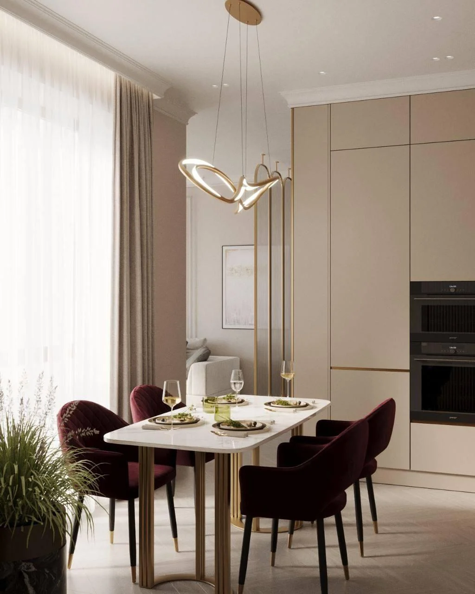
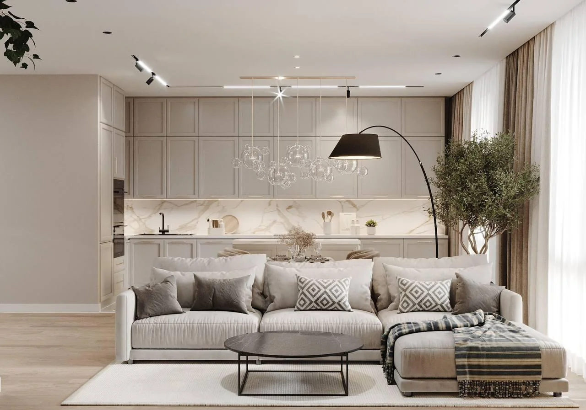
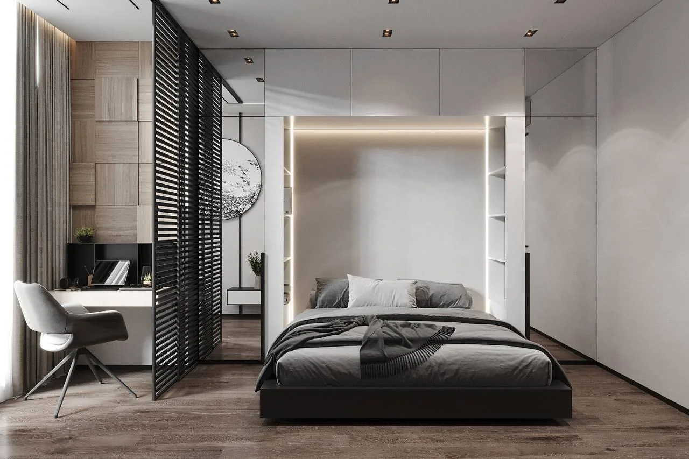
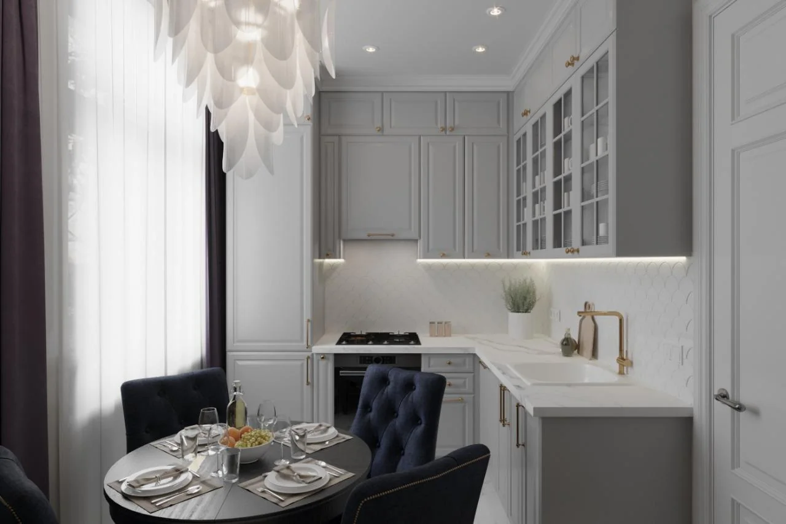
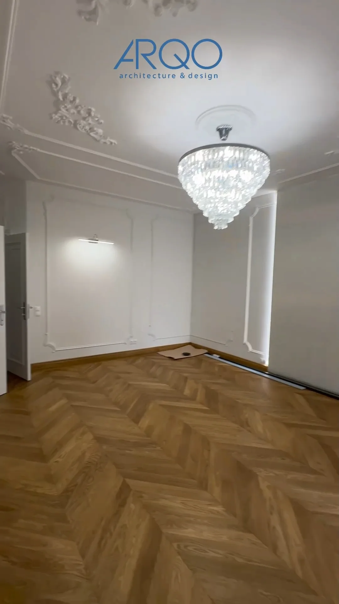

Ремонт квартиры под ключ: что проверить в смете до договора
До договора проверьте в смете состав работ, объёмы, материалы, исключения, порядок доплат и оплаты. Формулировка «под ключ» не заменяет перечень: должно быть понятно, какой результат вы принимаете и за что платите.
Тестовое превью / DEMO. Статья подготовлена по публичному сайту ARQO, не согласована с компанией и не является коммерческим предложением. Ниже — рекомендации заказчику, а не описание непубличных правил подрядчика. Фото показывают интерьеры с сайта, но не состав вашей сметы.
Что означает цена «от» на главной
На главной ARQO указана стоимость ремонта от 3900 ₽/м². Рядом компания сообщает о подробной смете и поэтапной оплате. Эта начальная ставка не даёт оснований считать её полной ценой ремонта с материалами: для квартиры нужен расчёт по её состоянию и согласованному составу работ.
Не переносите рекламную цифру в бюджет без расшифровки. Попросите показать, к какому набору операций относится предложение, что оплачивается отдельно и какой документ закрепляет итог. Если сравниваете подрядчиков, сопоставляйте одинаковый результат, а не только стоимость за площадь.
| Публичное предложение ARQO | Как читать | Что уточнить до договора |
|---|---|---|
| Ремонт от 3900 ₽/м² | Начальная стоимость, не подтверждённый бюджет квартиры | Состав работ, материалы, объёмы и исключения |
| Гарантия до 5 лет | Верхняя граница заявленной гарантии на ремонтные работы | Срок для вашего заказа, перечень работ и условия обращения |
| Скидка 10% на черновой материал | Акция с главной, не автоматическая скидка на весь ремонт | Условия, применимость, перечень материалов и база расчёта |
Я не могу определить окончательную цену вашей квартиры по публичной главной: здесь нет согласованной сметы объекта. Условия акции нужно уточнить у ARQO перед заказом; наличие предложения на сайте не означает, что оно применимо к любому договору.
Как зафиксировать исходное состояние квартиры

Начните обсуждение с того, что уже есть в помещении. Укажите, какие покрытия сохраняются, что демонтируют, какие инженерные решения планируется менять. К общей строке «подготовка» попросите пояснение: какие поверхности и операции она охватывает.
В описании ремонта квартиры в новостройке ARQO выделяет разные исходные состояния, включая квартиру без отделки и White box. Для сметы это повод спросить, какие существующие элементы учтены в расчёте и что исполнитель должен проверить на месте. Не считайте название отделки заменой обследованию.
Для вторичного жилья на сайте предложено оценить состояние и сохранить пригодное. Составьте список того, что хотите оставить: двери, напольное покрытие, сантехнику или встроенную мебель. Напротив каждого пункта запросите решение — сохраняем, защищаем на время ремонта или заменяем; стоимость решения должна быть понятна до начала соответствующих работ.
Как читать строки работ и объёмы

В строке сметы ищите действие, место выполнения, единицу измерения и объём. «Отделка комнаты» не отвечает на вопрос, какие стены, потолок и пол входят в расчёт. Попросите раскрыть объединённую позицию, если по ней нельзя проверить результат.
Уточните, откуда взяли объёмы: из плана, замера или предварительной оценки. Спросите, как пересчитают позицию после уточнения размеров и кто согласует изменение. Это особенно полезно, когда предложенный расчёт ещё не основан на осмотре квартиры.
Проверьте границы между соседними операциями. Подготовка основания, укладка покрытия и монтаж примыканий могут быть описаны отдельно либо объединены — само по себе это не ошибка. Ошибка для заказчика начинается там, где непонятно, входит ли нужный результат в общую сумму или появится доплата.
Какие материалы включены в расчёт

Попросите разделить стоимость работ и материалов. В перечне материалов должны быть понятны назначение, объём закупки и согласованный уровень выбора. Если марку ещё не определили, обсудите, как выбор повлияет на бюджет и когда его нужно утвердить.
Отдельно спросите о доставке, подъёме, хранении и вывозе остатков. Не приписывайте эти расходы подрядчику автоматически: отметьте, что включено в сумму, что рассчитывается отдельно, а что организуете вы. Такой список позволяет сравнить предложения без ложной экономии на неполном составе.
На главной ARQO есть акция со скидкой на черновой материал. Уточните, какие позиции участвуют и от какой цены считают снижение. В договорённостях полезнее видеть итог закупки и её состав, чем отдельно красивый процент; скидка на материал не означает скидку на работы или на весь заказ.
Где искать исключения и возможные доплаты

Спросите прямо: «Какие работы для желаемого результата сейчас не посчитаны?» Просмотрите демонтаж, защиту сохраняемых элементов, инженерные изменения, подготовку оснований и завершающие операции. Это перечень вопросов к исполнителю, а не утверждение, что такие позиции обязательно отсутствуют у ARQO.
Неизвестное лучше обозначить отдельным пунктом, чем скрыть в слове «прочее». Если объём станет понятен после вскрытия покрытия, запросите порядок осмотра, дополнительного расчёта и согласования. Не требуйте заранее назвать точную сумму там, где исходное состояние ещё не установлено.
Попросите описать процедуру изменения задания: кто предлагает новую работу, как показывает её цену и как вы подтверждаете согласие. Сохраняйте актуальную версию сметы вместе с перечнем принятых изменений. Иначе в конце обсуждение легко сведётся к разным воспоминаниям об устном разговоре.
Как связать этапы, приёмку и оплату
ARQO сообщает на главной о согласовании сметы, этапов и сроков до начала ремонта. Там же заявлены поэтапная оплата и оплата фактически выполненных работ. Сопоставьте эти публичные формулировки с документами вашего заказа, а не воспринимайте их как уже согласованный график.
У каждого этапа попросите назвать результат, который можно предъявить и принять. Уточните, какие документы сопровождают приёмку, как фиксируют замечания и когда возникает обязанность оплаты. Сумма этапа должна соотноситься с конкретными строками расчёта, а не только с названием «черновые работы».
Сроки обсуждайте после состава работ и решений по материалам. Запросите график и условия его изменения, включая согласование замен и задержек поставок. Публичная главная не позволяет назвать продолжительность ремонта вашей квартиры, поэтому в этом превью нет универсального срока.
Что уточнить о гарантии и результате

На сайте ARQO заявлена гарантия до 5 лет на ремонтные работы, а условия и обязательства компания предлагает закреплять в договоре. «До» здесь существенно: это не утверждение, что одинаковый срок действует на каждую позицию любого заказа.
Проверьте, какие работы покрывает гарантия, когда начинается её действие и как сообщить о недостатке. Отдельно спросите, как разграничиваются обязательства по работам и вопросы к купленным изделиям. Не переносите гарантию на ремонт на всё оборудование без подтверждения.
Опишите ожидаемый результат приёмки ещё при согласовании сметы. Выбранные материалы, расположение оборудования и согласованные чертежи помогают обсуждать конкретное исполнение. Иллюстрации красивого интерьера этого не заменяют: фотография на сайте не подтверждает, что показанные предметы включены в цену вашего ремонта.
Как сравнить смету и договор перед подписью
Откройте последнюю согласованную версию расчёта и проект договора одновременно. Сверьте объект, исполнителя, перечень приложений, общую сумму, исключения и порядок изменений. Если обсуждавшаяся позиция исчезла, попросите уточнить её статус до подписания, а не после начала работ.
Для квартиры от застройщика можно вернуться к составу направления «Новостройки» и использовать его как отправную точку вопросов. Но страницу услуги не следует принимать за приложение с согласованным заданием: то, что доступно в направлении, не обязательно заказано для вашей квартиры.
Подготовьте план, фотографии текущего состояния и список желаемых изменений. Перейдите к предварительному расчёту сметы на сайте ARQO и запросите расшифровку работ, материалов и исключений. Форма находится на внешнем сайте компании; в этом превью заявки и персональные данные не собираются.
Частые вопросы
Можно ли считать цену от 3900 ₽/м² полным бюджетом с материалами?
Нет: публичная начальная стоимость не подтверждает полный состав затрат. Нужна смета вашей квартиры с расшифровкой работ, материалов и исключений.
Что спросить, если смета состоит из общих названий?
Попросите раскрыть операции, места выполнения и объёмы. Вы должны понимать, какой результат оплачиваете и как его проверить при приёмке.
Нужно ли делать отдельный расчёт для квартиры White box?
Запросите расчёт по фактическому состоянию квартиры и выбранным изменениям. Одного названия отделки недостаточно, чтобы определить состав работ.
Как проверить, что материал не посчитан вместе с работой повторно?
Попросите показать состав объединённых позиций и отдельный перечень закупки. Сверьте, где уже учтены расходники и что добавлено самостоятельной строкой.
Скидка 10% распространяется на весь ремонт?
На главной указана скидка на черновой материал, а не на весь ремонт. Перечень участвующих позиций, базу расчёта и условия акции уточните у компании.
Что делать, если скрытые работы нельзя оценить заранее?
Попросите обозначить неопределённую позицию и порядок её расчёта после осмотра. Новую стоимость и состав согласуйте до выполнения дополнительных работ.
Как понять, за что платить на очередном этапе?
Сопоставьте результат этапа со строками сметы и условиями приёмки в договоре. Уточните, как оформляются замечания и выполненные работы.
Гарантия до 5 лет действует на любую работу?
Такого вывода из публичной формулировки сделать нельзя. Проверьте по договору срок гарантии и перечень покрываемых работ.
Показывают ли фотографии точный состав предложения?
Нет: интерьерные фото с сайта не заменяют спецификацию. Мебель, светильники и отделочные решения должны быть отдельно согласованы, если вы хотите включить их в заказ.
Какой следующий шаг после проверки сметы?
Отправьте исполнителю единый список вопросов и получите обновлённый расчёт. Подписывайте документы после сверки состава, исключений, оплаты и порядка изменений.
ТЕСТОВОЕ ПРЕВЬЮ / DEMO. Не согласовано ARQO. Не оферта. Формы и аналитика отключены. Одна статья: ссылки на соседние материалы отсутствуют намеренно.